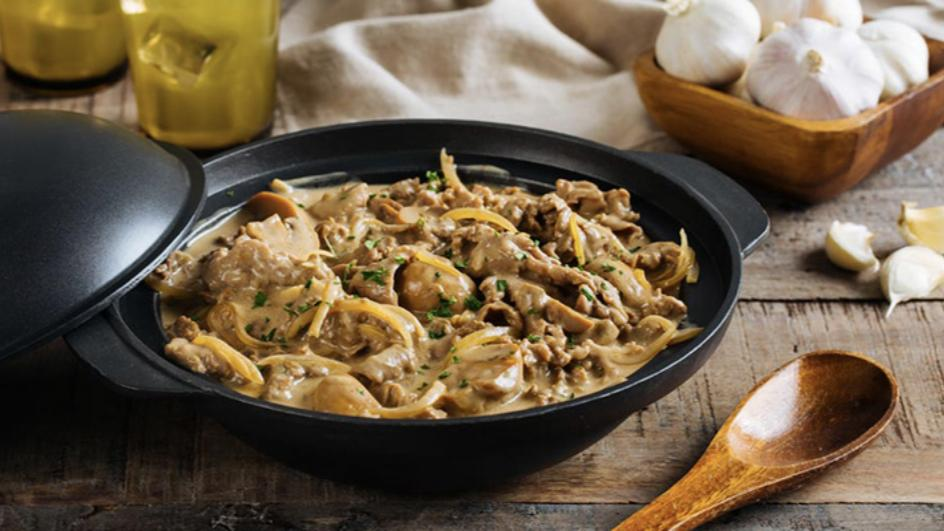

Creamy Beef with Mushroom

Here are the things you will need:
- 1 lbs. beef sirloin sliced thinly
- 4 ounces button mushrooms
- 31 grams Knorr Cream of Mushroom Soup
- 0.5 head garlic sliced
- 0.5 onion diced
- 1 cups water
- 1.5 tablespoons butter
- 0.5 tablespoon cooking oil
- 0.5 tablespoon parsley chopped
- Salt and ground black pepper to taste
How to prepare:
- Melt butter in a pan. Add cooking oil.
- Sauté garlic until it browns. Add onion and cook until it softens.
- Add the beef. Cook while stirring until the sides turn brown.
- Pour 1 cup water. Cover the pan. Adjust to a simmer and continue cooking for 35 minutes.
- Add button mushrooms. Stir.
- Combine 1 cup water and Knorr Cream of Mushroom in a bowl. Mix well.
- Pour the mixture into the pan. Let it boil. Continue cooking uncovered for 10 to 15 minutes using low heat setting.
- Season with salt and ground black pepper.
- Top with parsley. Serve warm with rice.
- Share and enjoy!
Nutrition Information
Serving: 6g Calories: 422kcal (21%) Carbohydrates: 8g (3%) Protein: 51g (102%) Fat: 20g (31%) Saturated Fat: 8g (40%) Polyunsaturated Fat: 2g Monounsaturated Fat: 8g Trans Fat: 0.4g Cholesterol: 148mg (49%) Sodium: 250mg (10%) Potassium: 1076mg (31%) Fiber: 1g (4%) Sugar: 3g (3%) Vitamin A: 348IU (7%) Vitamin C: 7mg (8%) Calcium: 81mg (8%) Iron: 5mg (28%)
Return